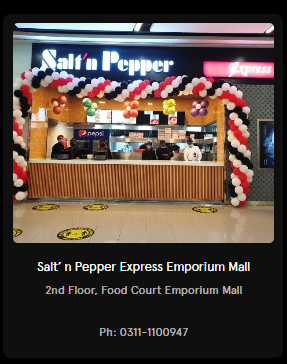
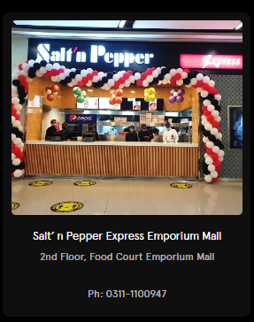

The Salt’n Pepper is Pakistan’s most recognized and distinguished hospitality brand with a history of market innovation and excellence in restaurants
chain operation. The Salt’n Pepper Restaurants are regarded and respected as the number one restaurant entity in Pakistan.
The Salt’n Pepper Restaurants are an example of gracious dinning, outstanding service, extraordinary classic and contemporary cuisine. The
estaurants have become the ultimate dinning destinations in Lahore. From family occasions to business dinners and moments of the heart, Its a
place is where unforgettable memories are made.
The first Salt’n Pepper Restaurant on the Lahore Mall Road was established in 1983 by hotelier/restaurant entrepreneur Mahmood Akbar,
considered by many as the pioneer hotelier and restaurateur in Pakistan.
Foodconsults (Pvt.) Limited the owing company of Salt’ n Pepper Restaurants, which has its Headquarter in Lahore, prides itself on developing
Pakistan’s first national chain of restaurants. For over 3 decades, the group’s focus has been to provide their guests with an exceptional dining
experience. The group’s profile includes expertise in Pakistani and Continental cuisine, along with Fast Food.
M/S. Foodconsults (Pvt.) Limited operates several different Salt’n Pepper Restaurants in Lahore. Each offering a unique dining experience. The
group’s chronology of success is as follows:-
The Salt’n Pepper Restaurants at Mall and Liberty Market Lahore, are
considered to be the first proper family style restaurants in the food
industry of Pakistan. These restaurants pride themselves for being
symbolized as an eatery with a customer loyalty spanning over three
generations. As a restaurant model, these have inspired the set-up of
numerous other restaurants across Pakistan.
The Salt’n Pepper Village Restaurant in Lahore is considered to be the
restaurant that revolutionized dining experiences in Pakistan. The Village
offers classic and modern sub-continental dishes. The village restauran
created a new concept of “Live Buffet” where everything is cooked in front
of you in a ‘bazaar’ like atmosphere. The Village is an acclaimed restaurant
brand, credited with the promotion of the Pakistani cuisine and the revival
of some old recipes. The Village Lahore has an seating capacity of over 300
guests. This restaurant has hosted countless lunches and dinners for local
and foreign dignitaries and celebrities like the late Princess Diana, late prime
minister of Pakistan Benazir Bhutto, ex-president of Pakistan Gen. (R) Pervez
Musharraf and many more.

is also started giving franchises of its restaurants
Islamabad
In February 2012, the first franchise of Salt’n Pepper restaurants was
In February 2012, the first franchise of Salt’n Pepper restaurants was
welcomed by the residents of Islamabad as well as the neighboring towns.
Express
Salt n Pepper – the food connoisseur every food lover cherishes. A food brand like no other.
Salt’n Pepper Restaurants were founded in an effort to capitalize on the
golden opportunities created by the rapidly growing restaurant industry.
Via our franchise programme, we are focused on further expanding our
restaurant network.
Salt’n Pepper intends to give franchise rights to the interested investors to
establish Salt’n Pepper Express Restaurants in different cities of Pakistan.
The franchises shall be offered under the name of ‘Salt’n Pepper Express’
only.
With our vision to evolve with changing times, we are proud to offer a smart
and practical concept as a great addition to the food chain dynamics today:
Our Express Business Model comprises of a smart but compact restaurant in
terms of seating and kitchen. This condensed model will offer a menu with a
selected number of our most favorite and popular dishes from our original
menu. You may consider it as ‘Salt n Pepper – Mini’.
Express Franchises are operational at the following locations:
 

Village Franchise
GUJRANWALA

The Salt’n Pepper Restaurants are an example of
gracious dinning, outstanding service, extraordinary
classic and contemporary cuisine. The restaurants
have become the ultimate dinning destinations in
Lahore. From family occasions to business dinner
and moments of the heart, this place is where
unforgettable memories are made.
+92 42 358 509 31
+92 42 358 509 30
snpfood@brain.net.pk
+92 42 111 100 678